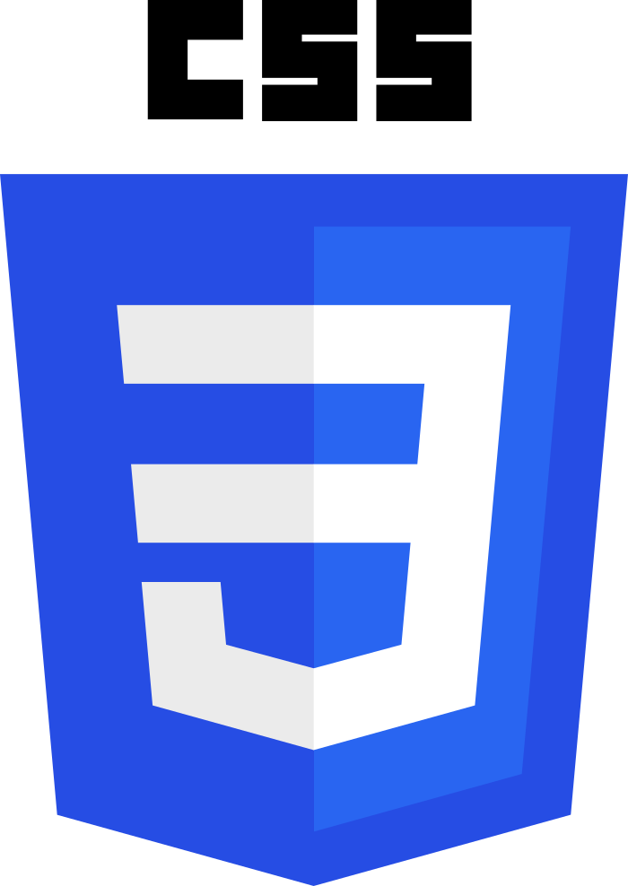
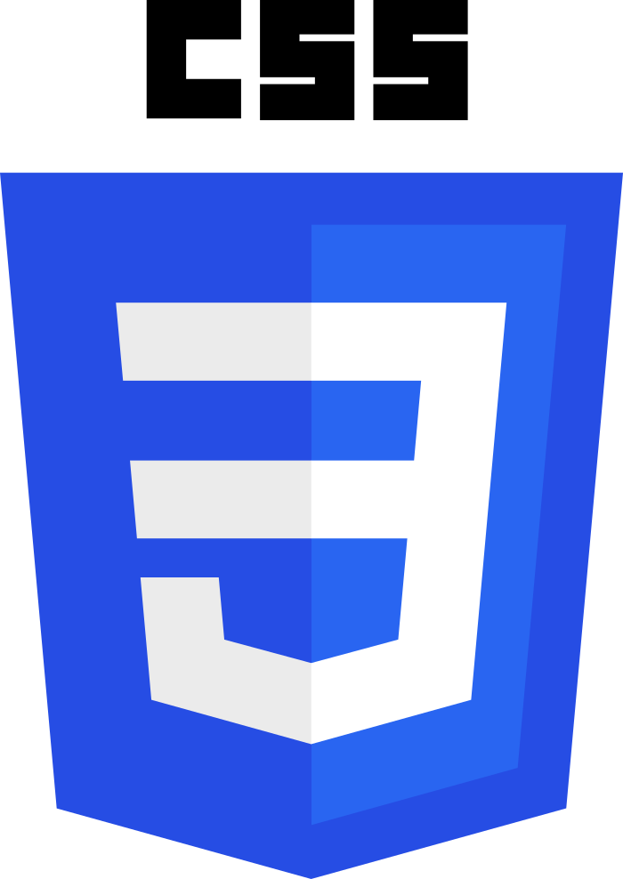

João V. Freitas
{Desenvolvedor Front-end}
 


Projetos pessoais
Essa sessão é onde eu lhes apresento alguns dos meus melhores projetos pessoais que mais me ajudaram no meu início de caminhada como desenvolvedor.
A maioria desses projetos, se não todos, estão no meu GitHub.
Projetos comerciais
Aqui eu apresentarei projetos feitos para clientes com uma breve explicação do metódo e tecnologias que foram usadas para a criação e manutençãos desses mesmos projetos.
Nenhum código de qualquer um dos projetos será compartilhado!
Designs
Além de projetos sites e apps "codados" por mim, também faço designs de sites e aplicativos. Fiz alguns trabalhos como Design Freelancer na plataforma Fivver e outros por contratos.
Sobre
Olá, me chamo João Vitor. É um prazer vê-lo por aqui, espero que tenha gostado do meu trabalho. No momento tenho apenas 17 anos, e estou adorando o mundo de desenvolvimento. Mesmo tendo caído aqui de paraquedas, vou me esforçar ao máximo para permanecer e fazer meu futuro.
Se você deseja fazer contato comigo, me mande mensagem por um dos meios sociais abaixo. Ainda não tenho conhecimento suficiente de Back-end para fazer um formulário. Meu foco por enquanto é o Desenvolvimento Front-end. Até! :)